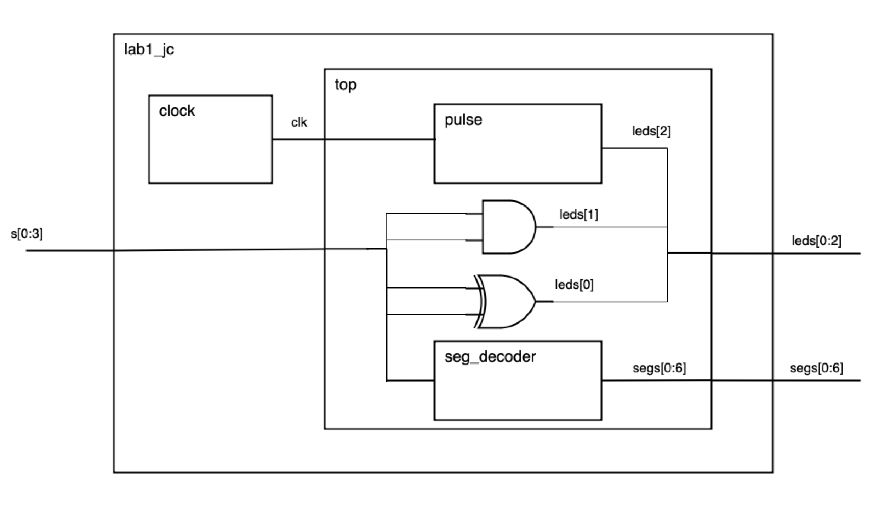
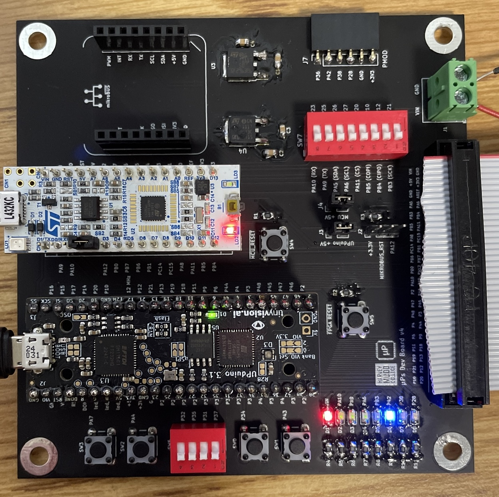

Lab 1: FPGA and MCU Setup and Testing
Hours spent on lab: 18
Introduction
In Lab 1, the overall goal was to ensure our E155 Development Boards were working correctly and to learn about the process of programming the FPGA and MCU. Both boards (FPGA and MCU) were initially programmed with example code to ensure the software flow was working. Afterwards, the FPGA was programmed with a custom design to control a 7-segment display and several LEDs based on a series of DIP switches.
FPGA Design
Task
Per the provided specifications for the lab, 4 DIP switches should be used as inputs to control the following outputs:
| OUTPUT | INPUT | OPERATION |
|---|---|---|
| LED 0 | S[0:1] | XOR |
| LED 1 | S[2:3] | AND |
| LED 2 | 48 MHz clock | 2.4 Hz blink |
| 7-Segment Display | S[0:3] | binary decoder |
Approach
To aid in debugging and reusability, I broke this into several SystemVerilog modules, each contained within its own file. I used the following modules:
| SystemVerilog Module | Description |
|---|---|
| lab1_jc | FPGA specific module, includes clock module |
| top | top-level, non FPGA-specific module |
| seg_decoder | 7-segment display decoder |
| pulse | Output pulse of desired frequency based on clk |
The following block diagram shows how these modules fit together and the inputs/outputs of each.

The FPGA-specific module can be found here and all of the other SystemVerilog modules are here.
Testing
I ran into lots of issues with QuestaSim on my personal computer (tried both Linux and Windows), but was eventually able to get it running by manually recompiling the files from within the Questa GUI. I’ll probably switch to using the vsim cli going forwards to avoid issues and automate this process.
Once I had Questa working, I created a testbench to verify my Verilog was working correctly. Since all of the modules are very simple in this case, I went with a single top-level testbench that runs on the top module (excluding the FPGA specific components). This [testbench] (https://github.com/jordancarlin/e155-lab1/blob/main/fpga/testbench/lab1_tb.sv) loads a series of testvectors that simulate all of the possible combinations of switches and checks that LEDs 0 and 1 along with the 7-segment display have the appropriate outputs.
The resulting waveform is pictured below.
When run, the testbench finishes with the following message, indicating a successful run.
16 tests completed with 0 errors.Hardware
Board Assembly
With this particular lab, there was more to do from a hardware perspective than a design perspective. After soldering all of the components to my board, I was having weird power issues where it worked with an input voltage from the 6 V line from a power supply but not the 20 V line (no matter how low that line was set). After lots of troubleshooting, I eventually traced it down to a bad solder joint and after reflowing it the board was working correctly.
Unfortunately, one of my ribbon cable connectors came broken, and I was unable to find any others. I temporarily clamped the connector on with its one functional latch and was able to get about half of the pins working, which was enough for this lab. This connector will need to be replaced in the future.
The assembled board can be seen here:

7-Segment Display Circuit
The 7-segment display uses a common anode, which means that one pin will be connected to power (3.3 V) and all of the other pins will get connected (through a current-limiting resistor) to IO pins in the FPGA. When these pins are pulled low the corresponding LED will turn on.
Resistor Calculation
To determine the appropriate resistor value, I used the forward voltage and current ratings from the 7-segment display datasheet. According to the datasheet, the voltage drop is typically 2.1 V, so with a 3.3 V supply voltage the resistor will have 1.2 V going through it. I wanted to keep the current fairly low to reduce power draw while ensuring the LEDs were bright enough to see, so I targeted a current between 10 mA and 20 mA (the currents used for luminous intensity rating and calculating voltage respectively). Using R=VI this gives a desired resistor of between 60 Ω and 120 Ω. I ended up using 100 Ω resistors, which results in 12 mA of current.
Schematic
The overall schematic for the circuit includes the FPGA, DIP switches, LEDs, and 7-segment display. It is shown below.
Results
The final design meets all of the specifications for this lab. The E155 development board is fully assembled and functional (barring the replacement of the broken ribbon cable connector). The FPGA is programmed with synthesized Verilog that is driving the LEDs and 7-segment display per the provided guidelines and has been tested both in simulation using a testbench and in hardware. The 7-segment display is capable of displaying all of the digits in a unique manner with constant brightness.